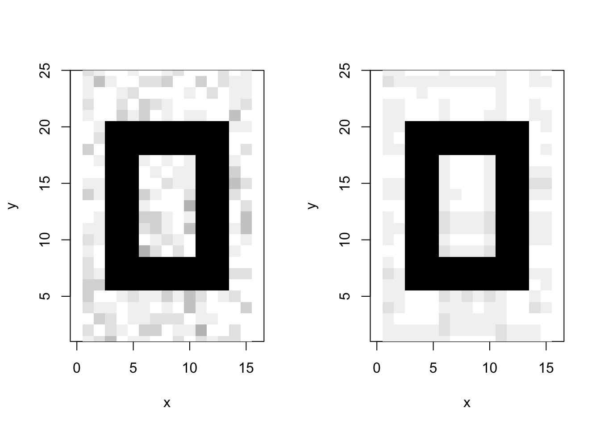

Chapter 5 Exercises 1
In this set of exercises we’re going to practice importing, filtering, and plotting data. We’re going to work with two datasets: (i) algae_chemistry_data.csv and (ii) alaska_lake_data.csv. By clicking on those links you can download each dataset.
For these exercises, you will write your code and answers to any questions in the RStudio script editor, then you will save that file and send it to me. That file comprises your submission for this assignment. I should be able to open and run the file on my computer (after changing the pathnames, if any - so don’t worry about compatibility for those). The file should contain both the code that can perform the actions described below and text that specifies the answers to the questions asked below
5.1 Part 1:
5.1.1 Question 1: Importing data
Import the algae chemistry data. Remember that read_csv() is part of the tidyverse, so that library needs to be loaded into your R session. Also remember that another option is to paste and run readCSV <- function() { return(readr::read_csv(file.choose())) } in your R Console, which then gives you access to the function readCSV(). That command doesn’t require an input path, so you don’t need to mess around with slashes and quotes. If you need examples of how to import data, please see the R Basics 1 section of this book.
5.1.2 Question 2: Dataset dimensions
How many rows and columns does the algae chemistry dataset have? (hint: when you display the dataset on your screen by typing its name into the console, dimensions are also displayed). Write the answer to this question in your R Script right below the code you use to find the answer.
5.1.3 Question 3: Objects
Import the algae chemistry data and send it into a new object called algae_chemistry_data. Remember about <-. See the R Basics 1 section of this book if you need help.
5.1.4 Question 4: Filtering
5.1.4.1 A
Now that you have the algae data imported and stored in an object called algae_chemistry_data, filter the data so that only entries are shown for which the chemical_species is “FAs”. What are the dimensions (i.e. number of rows and columns) of the resulting dataset?
5.1.4.2 B
Now filter the dataset so that only entries for the algae_strain “Tsv1” are shown. What are the dimensions of the resulting dataset?
5.1.4.3 C
Now filter the dataset so that only entries with an abundance greater than 250 are shown. Note that > can be used in the filter command instead of ==, and that numbers inside a filter command do not require quotes around them. What are the dimensions of the resulting dataset?
5.1.5 Question 5: Plotting
Make a ggplot that has algae strain on the x axis and abundance on the y axis. Use points (geom_point()) to represent each compound. You don’t need to color the points.
Which algae strain has the most abundant compound out of all the compounds in the dataset?
5.1.6 Question 6: Plotting
Make a ggplot that has abundance on the x axis and chemical_species on the y axis. Use points to represent each compound. You don’t need to color the points.
Generally speaking, which class of chemical species are the most abundant in these algae strains?
5.1.7 Question 7: Filtering and plotting
I am going to show you an example of how you can filter and plot at the same time:
library(tidyverse)
algae_chemistry_data <- read_csv("https://thebustalab.github.io/R_For_Chemists/sample_data/algae_data.csv")
## Parsed with column specification:
## cols(
## replicate = col_double(),
## algae_strain = col_character(),
## harvesting_regime = col_character(),
## chemical_species = col_character(),
## abundance = col_double()
## )
ggplot(data = filter(algae_chemistry_data, chemical_species == "essential_Aas"), aes(x = algae_strain, y = abundance)) +
geom_point()
Using the above as a template, make a plot that shows just omega_3_polyunsaturated_Fas, with algae_strain on the x axis, and abundance on the y axis. Color the points so that they correspond to harvesting_regime. Remember that mapping a feature of a shape onto a variable must be done inside aes().
Which harvesting regime leads to higher levels of omega_3_polyunsaturated_Fas?
Now change the plot so that all the points are size = 5. Remember that mapping features of a shape to a constant needs to be done outside aes().
5.1.8 Question 8: Filtering and plotting
5.1.9 Question 9: Open-ended plotting
With the ease of modifying plots in ggplot, we can use graphics to quickly evaluate dataset quality. For this question, make a plot that checks to see whether any of the three replicates consistently have higher abundance than the others. Use filtered data so that just one algae strain is shown, an x and a y axis, and points to represent the measurements. The points should be colored according to harvesting_regime. Make 3 plots, one for each strain of algae.
Do you see any obvious bias across the replicates?
5.1.10 Question 10: A peek at what’s to come…
Take the code that you made for Question 9. Remove the filtering. Add the following line to the end of the plot: facet_grid(harvesting_regime~algae_strain). Remember that adding things to plots is done with the + sign, so your code should look something like: